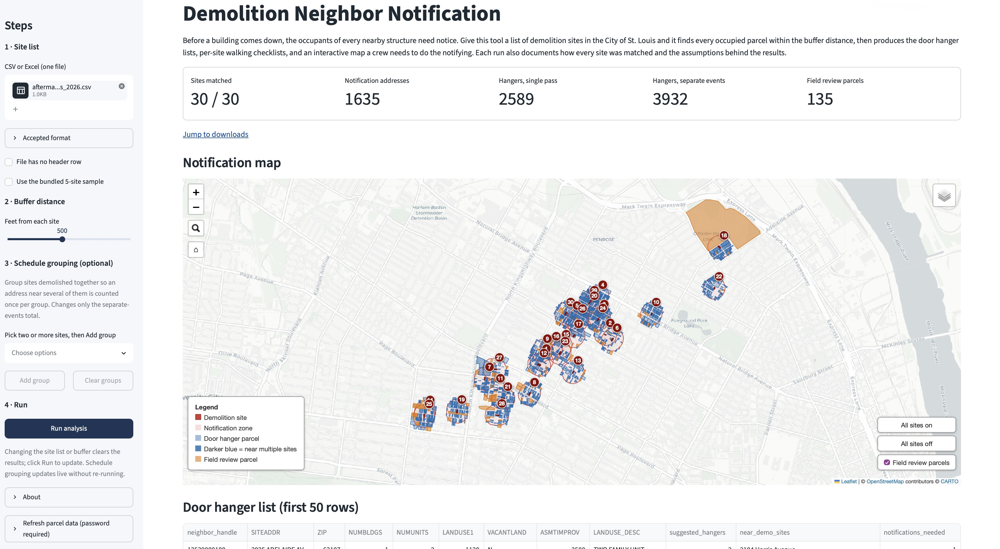
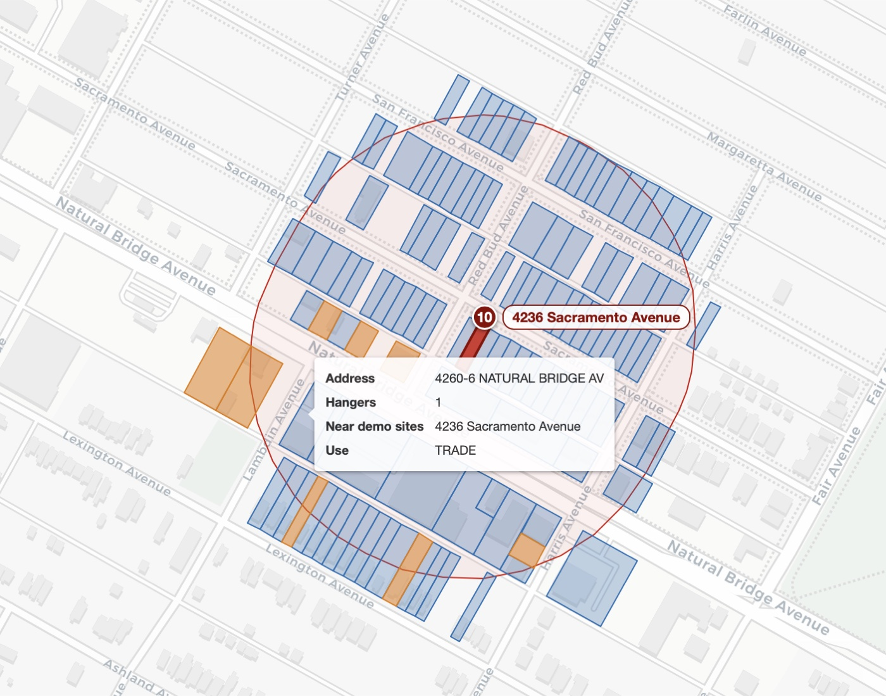
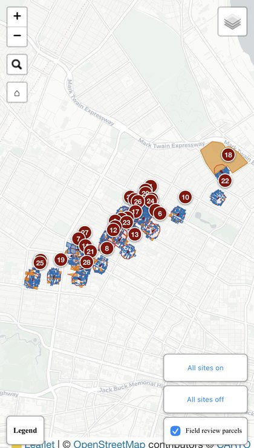

Parcel-level buffer analysis for a 30-site demolition project · Aftermath Disaster Recovery · St. Louis, MO
Aftermath Disaster Recovery is a disaster recovery and demolition contractor working in St. Louis. A returning client, they brought 30 new demolition sites across north St. Louis and needed a neighbor notification plan for each one, starting with a same-day turnaround on the first site.
Before a structure comes down, the occupants of every building near the site need notice. For this project the rule was every occupied structure within 500 feet of each demolition parcel.
The manual approach fails in three ways at once. Looking up parcels one at a time on the assessor's website means thousands of lookups across 30 demolition sites, and days of clerical work per round. Judging distance by eye is its own problem, because a parcel counts if any part of it touches the 500 foot zone, and at the margins there is no way to tell from an aerial view whether a lot 480 or 520 feet out qualifies. And vacancy is a guess, because nothing on a map says whether a lot holds an occupied two-family flat or an empty foundation. Each failure has a real cost. A missed notification creates liability, and a hanger on a vacant lot wastes crew time.
| Task | By hand | With this analysis |
|---|---|---|
| Finding neighboring parcels | One-at-a-time lookups on the assessor's site, days per round | All 126,958 city parcels searched in about a minute |
| Applying the 500 foot rule | Distance estimated by eye from an aerial view | Measured boundary to boundary in a projected coordinate system |
| Handling vacant lots | Guessed from the map | Filtered on assessor records, with 134 conflicting parcels flagged for field review |
| Ordering door hangers | A single count that ignores addresses near several sites | Two totals covering either demolition schedule, plus grouping for mixed schedules |
The analysis was built around decisions the client could stand behind, each confirmed rather than assumed.
The 500 feet measures from the parcel boundary. The buffer extends from the edge of the demolition parcel, not from its center, a rule confirmed with the client before the first list was delivered. A center-measured buffer would quietly shrink coverage around large lots, which is exactly where a missed notification would be hardest to defend.
Parcels with contradictory records are flagged for review in the field. A parcel is excluded from the notification list when the assessor's records show no buildings on it. But assessor data lags reality, and some records contradict themselves. A lot can have no buildings on file while its vacancy flag reads N or its improvement value is greater than zero. Those parcels go onto a field review list that names the exact conflict for each one. The program produced 134 of them, and field crews resolve each at the door rather than the office resolving them by assumption.
The print total follows the client's schedule. Two totals are reported by default and grouping produces a third, because the right quantity depends on the demolition calendar. Every address gets a suggested hanger count from the assessor's dwelling unit count, never less than one. If all 30 sites are noticed together, 2,598 hangers cover every address once. If sites are demolished on separate schedules, each event triggers its own notification, and an address near three sites needs three hangers, for a total of 3,948. When only some sites share a schedule, they can be grouped, so overlaps within a group count once and overlaps across groups count separately. The tool recomputes the total for any declared grouping, so the client can ask what the count becomes if sites 1 and 13 go together and get the answer from a rerun. The schedule is the client's decision, so the analysis reports both totals and the client orders the quantity that matches the demolition calendar, with the overlap already counted.
Checklists are ordered the way crews walk. Each site gets a printable checklist sorted nearest street first, then house number within each street, so a crew works one street at a time instead of following a spreadsheet sorted alphabetically. The method is documented in the deliverables as a heuristic rather than an optimized route.
Every package says how fresh its data is. City parcel records change between rounds, so each deliverable records the date the city published the data behind it, read from the city's own server rather than from when the download happened. A run whose parcel data is months older than its own run date is visible at a glance in the assumptions log, which is usually the prompt to refresh before anything goes out.
The map reaches the field as a link. A phone cannot usefully open a 3 MB HTML attachment from an email, so before publishing there was no straightforward way to get the map onto the device a crew actually carries. The map now publishes to a link, and a QR code goes onto the printed packet the crew already has in hand.
Every assumption is written down. Each run ships with an assumptions log stating the buffer rule, the structure filter, the hanger policy, and every other judgment call in plain language. When the client forwards a list to a city inspector or a subcontractor, the methodology travels with it.
The client received seven files covering all angles, and a published map adds an eighth:
doorhanger_list.csv · The master list of 1,636 unique addresses, one row each, sorted street by street. Each row carries the address and ZIP, building and dwelling unit counts, the land use code with the city's official description, the vacancy and improvement fields, the suggested hanger count, every demolition site the address is near, and the number of separate notifications it would need.doorhanger_list.xlsx · One workbook holding four sheets:
field_review_list.csv · The 134 flagged parcels as a standalone file, each naming the specific conflicting assessor fields, ready to hand to a crew for door-by-door verification.site_checklists.xlsx · Printable walking checklists, one sheet per site, 30 in this round. Each sheet opens with a header naming the site address and APN, its address and hanger totals, and the walking-order method, followed by the checklist itself: a done column, the walking order, hanger counts, land use, and distance, with that site's field review parcels listed underneath. A summary sheet totals addresses, hangers, and review parcels per site. When sites are grouped for a shared demolition schedule, that summary also carries the grouped total, so the workbook and the assumptions log never disagree. When the map is published, the summary gains the QR code and a clickable link, and every per-site sheet gains the link at the top.match_report.txt · How each of the 30 client sites matched a city parcel record, including which ID field matched, so the link between the client's list and the city's records is auditable.assumptions_log.txt · The run parameters, the date the city published the parcel data behind them, the headline totals, and the full numbered methodology in plain language. A published map adds its link here too.demo_notification_map.html · The interactive map below, a single file the client can open in any browser and share with anyone.notification_map_qr.png · Written only when the map is published. A print-sized QR code that opens the live map, also placed on the checklist summary page.Every site is a toggleable layer, so a crew lead can display only the sites scheduled for a given day. Parcels show their address, hanger count, and land use on hover, orange parcels are field review flags, and the search box finds any address in the program, whether a notification parcel, a demolition site, or a field review flag, in the city's form or in the form the client's own list used. The map below is the actual deliverable from this engagement, embedded here to explore.
Best explored on a larger screen. Open the map full screen.
A 3 MB HTML file is awkward to get onto a phone at a job site. One command puts the finished map on a public link instead, and prints a scannable QR code onto the paperwork the crew already carries.
The three places it lands do different jobs. The summary page of the checklist workbook gets the QR code and a clickable link side by side. Every per-site sheet gets the link at the top, so a single printed page still carries it. The assumptions log records it as well, so the methodology and the map travel together. The QR code is also saved on its own as an image sized for print.
A crew lead scans the packet in their hand and the map opens on their phone, with no file to email or copy across.
The code from this engagement's checklists. Scanning it opens the map above.
The site name carries the run date, so a job in July and a job in October each keep their own link and the earlier round's map stays live as a record of what was notified. The link is unlisted but not password protected, and the assumptions log that travels with the package says so.
The map above is published at stl-demo-notify-2026-08-06.netlify.app.
Aftermath can send a list and get the finished package back. They also received an app, so they can run a list themselves, change the buffer distance, try a different schedule grouping, and download everything without waiting on anyone. The same app is public, so anyone can try it on the sample data.
Publishing normally requires your own hosting account and an access token, a fair ask for a developer and an unreasonable one for a client who just wants a link. Instead, Aftermath was given a password, so they can publish through the app without creating an account or handling a credential of their own. Everyone else publishes on their own account, so a stranger using the public app cannot spend the operator's allowance.

Open the live app in a new tab to upload a site list and download the results. The screenshot reflects a run on updated July 2026 city data, so its totals differ slightly from the delivered figures because parcel records change over time. The app sleeps when idle and can take a few seconds to wake.
The same pipeline runs from the command line, for scripted or repeat work. The parcel cache is committed, so a clone runs immediately.
git clone https://github.com/Erin-Weiss/stl-demo-notify.git
cd stl-demo-notify && pip install -e ".[dev]"
stl-demo-notify run --input your_sites.csv --output-dir output/Rebuilding the cache from fresh city data is a single command, stl-demo-notify prepare-data --force. Adding --publish to a run puts the finished map on a link and writes the QR code alongside the other deliverables. The README covers the rest of the command line, including schedule grouping, column overrides, and the publishing flags.
The original deliverable was a script written under a same-day deadline. This section documents the engineering in the generalized tool, focusing on the design decisions that do not show up in a feature list.
The tool runs as a pipeline. The client's list and the city's data enter on the left, and the finished deliverables come out on the right. Each stage below gets its own section.
The city publishes geometry and attributes as separate downloads. The parcel shapes file carries polygons for 126,958 parcels with almost no descriptive fields. The land records file carries the assessor's attributes, site address, building and unit counts, land use code, vacancy flag, and improvement value, with no geometry. The two are joined on a shared parcel handle to make one working table, and a third download, the city's official Assessor Land Use vocabulary, supplies the text descriptions for the numeric land use codes.
Land use is where the original script worked from a hand-built lookup, good enough to deliver but with a handful of codes it could not confirm. It labeled codes from a hand-built dictionary, with several entries marked as unverified. The tool now downloads the official vocabulary, so code 5811 resolves to the city's own label, FAST FOODS, and a code missing from the table falls back to a labeled placeholder instead of raising an error.
Matching the client's list to the joined parcel table is where identifiers get difficult. A client site is matched against four of the table's ID columns in priority order, and those columns do not agree on what an ID looks like. ASRPARCEL is text with leading zeros, HANDLE is plain text, PARCEL10 is an integer, and PARCEL is a floating-point number, so parcel 5 is stored as 5.0. The client's own APN arrives from a spreadsheet as yet another type. Comparing a float 5.0 against an integer 5 against the text "5" matches nothing until each is reduced to one canonical form. Every identifier on both sides passes through a single normalizer first:
def norm_id(value: object) -> str:
if value is None or (isinstance(value, float) and pd.isna(value)):
return ""
s = re.sub(r"\.0+$", "", str(value).strip())
return re.sub(r"[^0-9]", "", s)It drops a trailing .0, strips any non-digit characters, and returns digits only, so the float 5.0, the integer 5, and a stray "5 " all become "5". Leading zeros are preserved, because they are significant in the ASRPARCEL column. Without this step, equivalent IDs fail to match and parcels drop out of the results with no error raised.
A prepare-data command does the downloading, joining, and normalizing once, caching the result as GeoParquet, a columnar format that stores the geometry and attributes together. The cache loads in about two seconds, and the analysis itself never touches the network, so a rerun works identically with no internet connection. Publishing is the one optional step that needs one.
The notification zones on the map look like circles, but they are not. Buffering a polygon pushes every edge outward and rounds the corners, producing an inflated version of the parcel's own shape. For one rectangular lot in this file, the 500 foot buffer measured 347.5 by 334.6 meters, visibly close to round but 13 meters off square. The distinction matters because it preserves the client-confirmed rule that distance measures from the parcel boundary. A true circle drawn from the parcel center would be simpler to compute and wrong at the margins.
All distance math runs in EPSG 26996, the Missouri East projected coordinate system, where coordinates are in meters and Euclidean distance is accurate. Latitude and longitude cannot support that arithmetic, because a degree of longitude covers less ground the farther it sits from the equator. Coordinates convert back to latitude and longitude only at the end, for the web map.

A demolition parcel and its notification zone up close, with the neighbouring parcels the buffer actually caught.
Exact polygon intersection is expensive. Running it between every buffer and every one of 126,958 parcels would give the right answer slowly. The search instead runs in two passes. A spatial index answers a cheap approximate question first, which parcels' bounding boxes overlap this buffer's bounding box, and the expensive exact geometry runs only on that shortlist:
cand_idx = list(sindex.intersection(buf.bounds))
hits = parcels_m.iloc[cand_idx]
hits = hits[hits.intersects(buf)]The same two-pass shape, a coarse cheap filter feeding a precise expensive one, appears throughout database indexing and retrieval systems. Here it cuts each site's exact-geometry workload from 126,958 candidates to a few dozen, which is the difference between a runtime measured in minutes and one measured in seconds.
Each notification decision the client agreed to is a short, explicit piece of code. Because assessor data is inconsistent, arriving as text, blanks, or numbers depending on the column and the year, every field is read defensively rather than trusted.
The structure filter is the rule that a parcel makes the list only when the assessor records at least one building on it. The building count is coerced to a number, with anything unparseable treated as zero:
numbldgs = pd.to_numeric(detail["NUMBLDGS"], errors="coerce").fillna(0)
has_structure = numbldgs > 0An excluded parcel earns a field review flag when its own record disagrees with the exclusion. That disagreement is one boolean expression:
conflict = (vacant == "N") | (improved > 0)Rather than a generic warning, each flagged parcel gets a reason generated from whichever condition fired, so the field review list tells a crew exactly what to check:
def _review_reason(vacant_value, improved_value):
reasons = []
if vacant_value == "N":
reasons.append("VACANTLAND marked 'N' (not vacant)")
if improved_value > 0:
reasons.append(f"ASMTIMPROV recorded at {improved_value:g} (> 0)")
return "CHECK: " + "; ".join(reasons)The hanger policy is the rule that every listed address gets at least one hanger, with multi-unit buildings getting one per dwelling unit:
units = pd.to_numeric(numunits, errors="coerce").fillna(0)
suggested = units.clip(lower=1).astype(int)And the two project totals fall directly out of the deduplicated list. The single-pass total sums hangers across unique addresses. The separate-events total weights each address by the number of separate notification passes near it, one per nearby site, or one per group when sites share a schedule:
total_single_pass = int(dedup["suggested_hangers"].sum())
total_separate_events = int(
(dedup["suggested_hangers"] * dedup["notifications_needed"]).sum()
)A declared grouping lowers notifications_needed for addresses near several sites in one group, which lowers the separate-events total without changing the formula.
Each of these rules is also stated in plain language in the assumptions log delivered with the run. The log does not reproduce the code, but it records the buffer rule, the structure filter, the hanger policy, and the rest in sentences a client can read and question, so the reasoning behind every list is written down rather than buried in the program.
Each checklist orders a site's addresses with a greedy nearest-street walk. Starting at the demolition site, visit the closest street, then the closest remaining street from wherever you now stand, and so on until every street is ranked, with house numbers sorted within each street.
Finding the closest street means comparing straight-line distances between street centroids. The Euclidean distance between two points is:
d = √(x₂ − x₁)² + (y₂ − y₁)²
Only the comparison matters here. The walk needs to know which street is nearest, and never uses the distance itself. The square root is a monotonically increasing function, so for any two non-negative numbers a and b, the inequality a < b holds exactly when √a < √b. Ranking the streets by the value inside the root therefore produces the identical order as ranking them by the true distance. The code compares those squared distances and never calls the root at all:
nearest = min(
remaining,
key=lambda s: (street_centroid.loc[s, "_x"] - cx) ** 2
+ (street_centroid.loc[s, "_y"] - cy) ** 2,
)On its own the skipped square root saves almost nothing. It reflects a habit that runs through the tool. Work out the quantity the result actually depends on, and compute only that.
The interactive map is a single self-contained HTML file built with Folium on Leaflet.js, extended with custom JavaScript for the operational controls. Some of its engineering is invisible by design:

The same map on a phone. One tap opens the legend.
The collapse is one CSS rule. A hidden checkbox holds the state, and the legend body reacts to it, which means the behaviour survives in any context where scripts are blocked:
.legend-toggle-input:checked ~ .legend-body { display: block; }A handful of smaller decisions carry the tool from a working analysis to something a business can rely on:
The web app can publish on the operator's hosting account, which means it holds a credential that costs real money to misuse. Three rules keep that safe.
The middle rule is three lines of code. Those three return values are the three ways the app can behave:
def publish_mode(token, password):
if not token:
return "visitor" # publish with your own account
if password:
return "shared" # the password unlocks the operator's account
return "unsafe" # a token with no password never publishes| What the operator set up | What a visitor can do | Whose hosting allowance pays |
|---|---|---|
| Nothing | Publish using their own free hosting account | The visitor's |
| An account credential and a password | Everything above, plus publish on the operator's account with the password | The operator's, for people given the password |
| A credential with no password | Nothing. Publishing turns itself off and explains why | Nobody |
The middle row is how the client publishes without ever creating an account. The bottom row is the case that would quietly cost money, so it is the one the code refuses to run.
The test suite runs over 100 tests, from identifier normalization and column detection to a grid of synthetic squares where the correct neighbors and distances are computable by hand, so the geometry math is verified against known answers rather than against itself. The tests need no network and no city data, finish in about a second, and run on every push through GitHub Actions alongside ruff linting configured beyond its defaults, adding import-order, bug-pattern, and modern-syntax checks.
Publishing hands work to someone else's servers, and that changes what a test can prove. Three kinds of check were used, each answering something the one before it could not.
| What was tested | What it proved | What it could not |
|---|---|---|
| Mocked tests | The code did what its author intended | Whether that intention matched the real service |
| A free draft deploy | The real service accepted the requests | How a published site behaves for the public |
| The first real publish | The link works for the people it was made for | — |
Mocked tests swap the hosting service for a stand-in that hands back whatever reply the test asks for, so nothing leaves the machine. That makes them the right tool for questions about this tool's own behaviour. Does the error wording make sense to someone who has never heard of the host. Does publishing actually disable itself when a password is missing. Does a failed publish still write every local file. They cost nothing and touch no network, so they run on every push. What they cannot do is notice when the code is confidently wrong about what the real service expects.
Which is what happened. The first version uploaded the map as a zip archive, using a flag a support forum described as marking the deploy a draft. Every test passed. The first draft deploy, still a free check rather than anything published, came back reporting success and served the map as unformatted text, because that flag is not supported for zip uploads. The documented method works differently, sending a list of file paths with a fingerprint of each file rather than an archive. Rebuilding on it made the draft render the map properly, so the whole pipeline could be checked while still spending nothing.
One problem could not surface that way. The first real publish succeeded, but checking the link showed the map was not public. The only apparent route to making it public was a button in the hosting dashboard, which would have meant a manual visit after every single run, turning a tool meant to save effort into one that adds a step. The cause is that this host now makes new projects private by default, and draft URLs require a sign-in regardless, so nothing before a real publish could have shown it. The same setting turned out to be reachable through the API, so it is now applied the moment a site is created, and the fix was confirmed by opening the link with no account at all.
The generalized tool was validated against the original engagement's delivered files. All four headline figures reproduce exactly: 1,636 addresses, 2,598 and 3,948 hangers, and 134 field review parcels. The remaining row-level differences were investigated individually, and each traced to a deliberate improvement rather than a defect. The official land use vocabulary replaced interpreted labels. The field review reasons became specific instead of generic.
These are the delivered engagement's figures, produced from city parcel data published 2026-07-22. Parcel records change over time, so a run against refreshed data shifts the counts slightly. Data published 2026-08-05 returns 1,635 addresses in place of 1,636. Every deliverable now records the date the city published the data behind it, read from the server rather than from when the download happened, so any package can be dated on its own. A refresh through the app updates only its running container until that container restarts.
Refreshing the committed cache creates a problem for anyone changing the code later. The four headline figures come from one particular vintage of city data. Once the cache moves on, a run that returns different numbers could mean the city's records changed, or could mean an edit broke something, and the output alone cannot tell those apart. The exact parcel data behind the validated run is committed for that reason, with a script that runs the current code against it and checks that the four figures still come out, so the check can be run by anyone rather than taken on trust.
python case-study/validation/check_headline_numbers.pyThat check runs on every push through GitHub Actions, so an edit that moves any of the four figures fails the build rather than going unnoticed.
One row-level difference turned up during the refactor and was worth chasing down. A parcel flagged for review can sit near several demolition sites at once, and the field review list files it under a single representative site. The original script chose that site by sorting the parcel IDs as text, an incidental effect of alphabetical ordering. The rebuild makes the choice deliberate, filing each parcel under the first matching site in the client's own list. Both versions flag the same parcels and record the same full set of nearby sites for each. Only the single site shown at the head of the row changed.